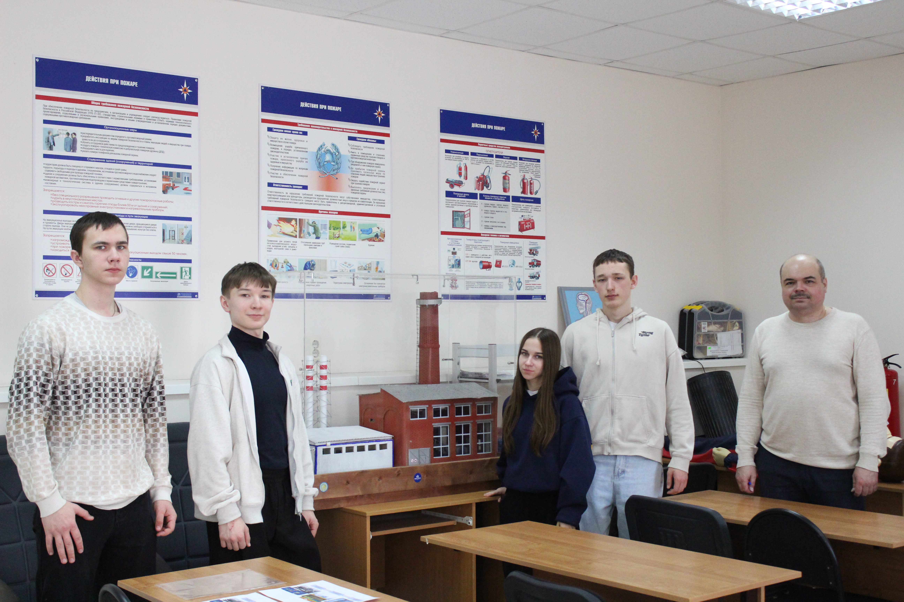
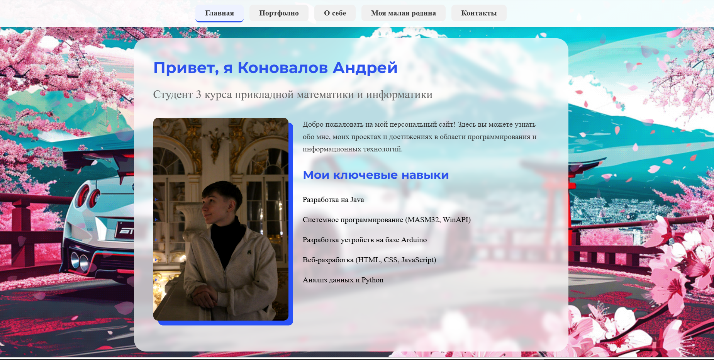

Мои проекты
Некоторые работы, выполненные в процессе обучения
Система управления библиотекой
Разработка на Java с использованием базы данных H2. Реализованы CRUD операции, поиск и фильтрация книг.

"Тепловизорный сторож" на Arduino
Создание системы тепловизорного контроля состояния стенок котельных. Проект для заказчика АО Вологдагортеплосеть.
💻 Системное приложение на MASM32
Разработка приложения для работы с файловой системой на ассемблере MASM32 с использованием WinAPI. Реализованы функции просмотра директорий и управления файлами.

Персональный сайт-портфолио
Разработка современного многостраничного сайта с эффектами параллакса, адаптивным дизайном и анимациями. Включает главную страницу, портфолио и контакты.